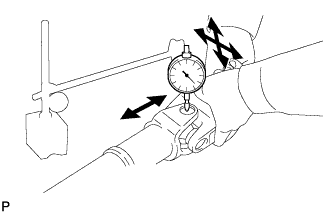

КАРДАННЫЙ ВАЛ В СБОРЕ > ПРОВЕРКА |
| 1. ПРОВЕРЬТЕ КАРДАННЫЙ ВАЛ В СБОРЕ |
С помощью индикатора часового типа проверьте биение карданного вала.
| 2. ПРОВЕРЬТЕ ПОДШИПНИК КРЕСТОВИНЫ КАРДАННОГО ШАРНИРА ЗАДНЕГО КАРДАННОГО ВАЛА |
Проверьте подшипники крестовины на наличие износа и повреждений.
При необходимости замените подшипник крестовины.
|  |
Проверьте осевой люфт подшипника крестовины, для чего поверните вилку, крепко удерживая вал.